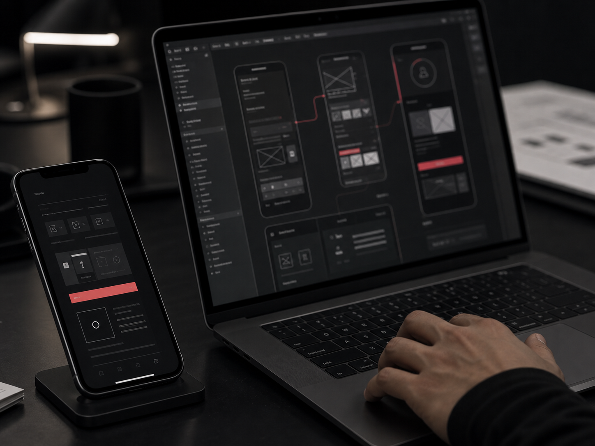

Projects
Past work, organized by the kind of change it created.
Use this page as the map. Each category leads to a more focused introduction of the work, the problems, and the outcomes.
 01 / Brand Systems
01 / Brand Systems
Brand direction, identity systems, launch assets, and commercial storytelling.
For work where a business needed a clearer promise, a sharper presence, or a system that could hold multiple touchpoints together.

02 / Digital ProductsWebsites, apps, internal tools, and product interfaces that support action.
For work where digital products needed to become practical, usable, and connected to real operations.
03 / AI & OperationsAI adoption, workflow redesign, automation, and operational improvement.
For work where the goal was not simply adding AI, but changing how teams decide, produce, check, and improve.
 04 / Experience & Marketing
04 / Experience & Marketing
Customer journeys, physical touchpoints, campaigns, and growth loops.
For work where the experience needed to move across stores, screens, content, and ongoing marketing.